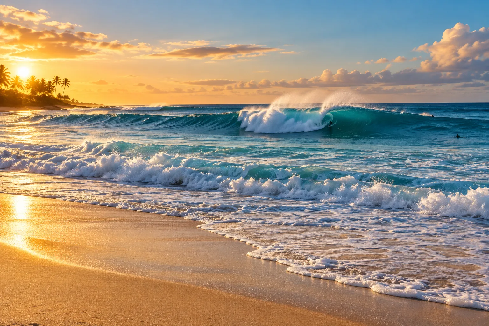

Sunset Beach
Oahu, Hawaï, États-Unis · surf

Pic géant du North Shore d’Oahu, qui accueille des houles massives l’hiver. L’un des terrains les plus exigeants du circuit professionnel.
- Lieu
- Oahu, Hawaï, États-Unis
- Niveau
- Expert
- Activités
- surf
- Type d'eau
- Mer / océan
- Coordonnées
- 21.68, -158.04 (position approximative du secteur)
Dangers à connaître
- Vagues énormes en hiver.
- Courants très violents.
Le conseil d'Ocean Buddy
En été, la plage devient calme et invite à la baignade : l’hiver, regarde depuis le sable.
Ouvrir dans Ocean Buddy Télécharger sur l'App Store
Source : Fiche Ocean Buddy · septembre 2026 · à vérifier localement.